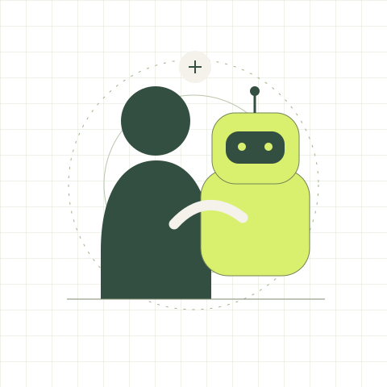

M.Eng., Electrical Engineering · University of Virginia, 2025
HUMAN ↔ MACHINE01 / INTERACTION

Good engineering starts with understanding who it is for.
Across hardware and softwareHuman–robot interactionEdge intelligencePractical AI tools
01 / Selected work
Ideas made concrete.
Projects spanning embodied interaction, constrained hardware and the tools we use to work with AI.
MEDINAO / SYSTEM VIEW
01 Voice / keyboard input
↓
02 Destination selection
↓
03 Route & robot response
NAO V6 · PYTHON · NAOqi
Robotics prototype2025
MediNAO
Hospital wayfinding through human–robot interaction
A NAO V6 prototype bringing together speech and keyboard input, camera-based interaction and route planning. The code connects NAOqi services with a Python interface and grid-based pathfinding.
The question behind the project: how can a robot make guidance easier to understand—and give people a way to correct it?
An engineering prototype in a hospital-themed setting. It does not establish clinical effectiveness, diagnostic capability or deployment in patient care.
A command-line tool that inspects repository file names and sizes to flag likely context noise, such as generated output and large files. It reports a context-health heuristic and suggests ignore rules before a repository is handed to an AI agent.
A practical interest of mine: helping people understand what their tools are actually reading and doing.
The score is a heuristic over file names and sizes, rather than a measure of source-code quality or a security audit. The project documents its assumptions and limitations.
03EDGE AI
Hardware project2024
Embedded vision on Raspberry Pi
Hands-on work with camera input, face recognition and local AI inference on a Raspberry Pi 4B. The project developed my interest in the relationship between model behaviour, response time and the constraints of edge hardware.
Raspberry Pi 4BPythonOpenCVTensorFlow Lite
04ROBOTICS
Software scaffoldExploration
Robotic car & language interaction
An exploration of separating dialogue, perception and motion control in a robotic-car architecture. The repository starts with a local echo-dialogue service and HTTP API; speech, navigation and hardware integration are listed as future work.
I’m interested in the gap between a system that produces a response and assistance that a person can understand, question and use.
01
Human–robot interaction
How people interpret a robot’s behaviour, communicate their needs and recover when an interaction goes wrong.
02
Adaptive assistance
How support could change with a person’s capabilities, needs and experience over repeated interactions.
03
Appropriate reliance
How systems can communicate their limits so people can make informed decisions about following their advice.
Research interests and future directions, rather than claims of completed research.
03 / Background
An engineering foundation. A human focus.
My background connects measurement, electronics and computation. Through embedded systems and robotics projects, I’ve become increasingly interested in how technical decisions shape a person’s experience of a system.
I work across Python, C/C++ and MATLAB, with hands-on experience in Raspberry Pi, STM32 and NAO robotics. I value clear assumptions, careful verification and useful systems that acknowledge their limits.